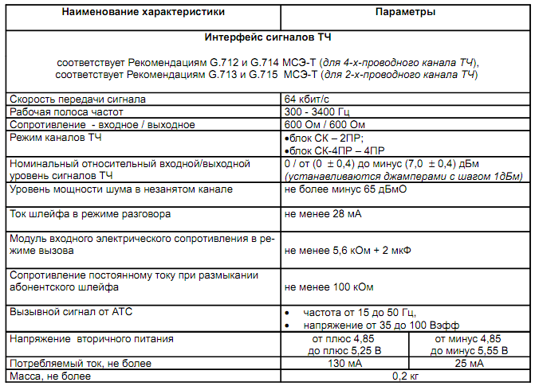
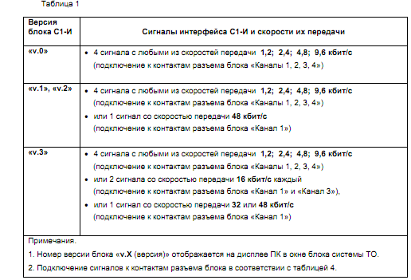
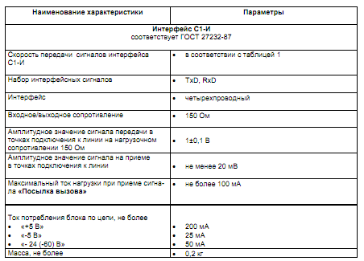
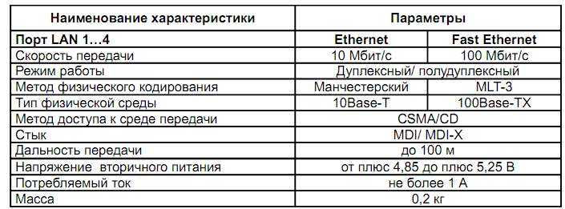
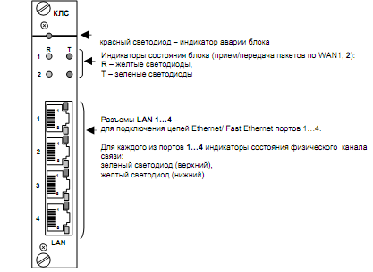

Тема №7. Устройство цифровых систем телекоммуникаций
Занятие №5. Оборудование первичных мультиплексоров.
Учебные вопросы:
Литература:
- Многоканальные системы передачи (часть 2). Учебно-методическое пособие «Аппаратура МКСП с ЧРК». – Мн.: БГУИР, 2010.
- Учебно-наглядное пособие «Альбом схем аппаратуры МКСП». – Мн.: БГУИР, 2010.
- Касанин С.Н., Дюжов Г.Ю. Субботин С.Г. Методическое руководство «Цифровая система передачи MEGATRANS-3M». – Мн., БГУИР, 2010.
1. Назначение принцип работы блока абонентских комплектов АК и АК-МБ.
Блок АК (АК-4ПР) осуществляет ввод/вывод четырех сигналов ТЧ, ИКМ преобразование сигналов ТЧ по А-закону кодирования в соответствии с рекомендацией G.711 МСЭ-Т в цифровые сигналы 64 кбит/c для их передачи в четырех канальных интервалах (КИ) цикла первичного группового сигнала (ПГСЕ1).
Блоки обеспечивают:
АК – подключение телефонных (ТЛФ) аппаратов со стороны удаленного абонента или организацию четырех прямых диспетчерских каналов.
Режим каналов ТЧ – двухпроводный (2ПР);
АК-4ПР – подключение четырехпроводных ТЛФ аппаратов со стороны удаленного абонента или организацию четырех прямых диспетчерских кана-лов.
Режим каналов ТЧ – четырехпроводный (4ПР).
Сигнальная информация передается между блоками АК (АК-4ПР), установленными на противоположных участках линии связи, следующим образом:
в 16КИ первичного группового сигнала
в информационном канале.
Значения номинальных относительных выходных уровней сигналов ТЧ от нуля до минус 7 дБм с шагом 1 дБм устанавливаются в блоках джамперами.
Блок АК-МБ осуществляет ввод/вывод двух сигналов ТЧ, ИКМ преобразование сигналов ТЧ по А-закону кодирования в соответствии с рекомендацией G.711 МСЭ-Т в цифровые сигналы 64 кбит/c для их передачи в двух канальных интервалах (КИ) цикла первичного группового сигнала (ПГС).
Блок АК-МБ обеспечивает режимы работы:
«индукторный вызов» - подключение телефонных аппаратов (ТА) с местной батареей (МБ) и индукторным вызовом и ручных коммутаторов;
«замыкание шлейфа» – подключение обычных ТА с центральной батареей (ЦБ).
Режимы каналов ТЧ (устанавливаются в блоке съемными перемычками - джамперами) :
четырехпроводный – 4ПР,
двухпроводный – 2ПР.
Уровни сигналов в режимах 2ПР, 4ПР устанавливаются джамперами на печатной плате
Сигнальная информация в режиме замыкания шлейфа передается между блоками АК-МБ, установленными на противоположных участках линии связи, в 16 КИ цикла ПГС.
Блок АК-МБ в режиме индукторного вызова обеспечивает передачу сигнальной информации тональной частотой 2100 Гц в информационном канале или 16 КИ.
Блоки АК-МБ эксплуатируются в оборудовании только с блоками питания с генератором вызывных токов (ГВТ).
Контроль состояния, управление режимами работы и коммутация каналов блока АК-МБ осуществляются по любой из систем технического обслуживания (ТО), работающих:
По протоколу SNMP с помощью программного обеспечения (ПО):
«Супертел-NMS»
«Супертел-NMS v2»
По протоколу «СуперТел-ТМ» спомощьюПО:
«СуперТел-ТМ»
Встроенного ПО блока управления и мониторинга через управляющий блок контроля и управления КУ-S из состава оборудования.
2. Назначение принцип работы блока станционных комплектов СК.
Блок СК осуществляет ввод/вывод четырех сигналов ТЧ, И КМ преобразование сигналов ТЧ по А-закону кодирования в соответствии с рекомендацией G.711 МСЭ-Т в цифровые сигналы 64 кбит/c и передачу их в четырех канальных интервалах (КИ) первичного группового сигнала (ПГС Е1).
Блок СК имеет два варианта исполнения:
СК ТАИЦ.467756.043 - подключение удаленных абонентов со стороны АТС. Режим каналов ТЧ
– двухпроводный (2ПР);
СК-4ПР ТАИЦ.467756.043-01 - подключение удаленных абонентов со стороны АТС.
Режим каналов ТЧ – четырехпроводный (4ПР).
Сигнальная информация (поканальная сигнализация) передается от станционного блока следующим образом:
по ВСК в 16 КИ первичного группового сигнала
в информационном канале (режим Внутриполосной сигнализации).
Назначение поканальной сигнализации:
передача сигналов занятия абонентской линии и сигналов набора номера от блока абонентских комплектов (АК) на АТС;
прием сигналов вызова от АТС и их передача на блок АК.
Значение номинальных относительных выходных уровней сигналов ТЧ - от нуля до минус 7 дБм с шагом 1 дБм - устанавливается в блоке джамперами.
Контроль состояния блока, управление режимами работы осуществляется по системе технического обслуживания (ТО):
с помощью программного обеспечения (ПО) «СуперТел-ТМ» с рабочей станции (персонального компьютера – ПК) по командам управляющего блока контроля и управления (КУ) или КУ-S;
с помощью ПО «Супертел-NMS» с терминала сетевой системы управления;
с помощью ПО «Супертел-LT» с локального терминала по командам управляющего блока контроля и управления по протоколу SNMP (КУ-S)
3. Назначение принцип работы блока цифровых интерфейсов С1-И.
Блок С1-И предназначен для ввода/вывода сигналов интерфейса С1-И со скоростями передачи, приведенными в таблице 1.
Передача сигналов осуществляется в одном КИ группового сигнала Е1.
Совместно с передачей сигналов в этом КИ осуществляется передача для каждого сигнала интерфейса С1-И сигнала «Посылка вызова».
 4. Назначение принцип работы блока тональной частоты ТЧ.
Блок КТЧ осуществляет ввод/вывод четырех сигналов ТЧ, ИКМ преобразование сигналов ТЧ по А-закону кодирования в соответствии с Рекомендацией G.711 МСЭ-Т в цифровые сигналы со скоростью 64 кбит/c и передачу их в четырех канальных интервалах (КИ) первичного группового сигнала (ПГС Е1).
Режим каналов ТЧ:
четырехпроводный – 4ПР;
четырехпроводный транзит – 4ПР-ТР;
двухпроводный – 2ПР.
Режим каналов и значение номинальных относительных вход-ных/выходных уровней сигналов ТЧ устанавливаются в блоке джамперами.
Поканальная сигнализация Е/М (тип 5) передается по двум выделенным сигнальным цифровым каналам со скоростью 500 бит/c в составе 16-го КИ (два входных сигнала М и два выходных сигнала Е для каждого канала ТЧ
5. Назначение принцип работы блока коммутатора локальных сетей.
Блок КЛС на основе MAC-адресов осуществляет маршрутизацию паке-тов между четырьмя портами LAN (Fast Ethernet IEEE 802.3 и Ethernet IEEE 802.3) и двумя портами WAN, сигналы которых коммутируются: на внутреннюю шину МП или КЦС со скоростями nх64 кбит/с (n = 1…31)
По системе технического обслуживания (ТО) с помощью команд управ-ления с персонального компьютера (ПК) устанавливаются:
Для каждого из четырех портов LAN :
полнодуплексный (Full Duplex) или полудуплексный (Half Duplex) режим работы;
управление потоком кадров (Flow Control) при полнодуплексном режи-ме работы Full Duplex;
при выборе режима Half Duplex, управление производится по методу обратного давления (Back Pressure);
функция автопереговоров Auto Negotiation, позволяющая двум соеди-ненным физически устройствам, которые поддерживают несколько стандар-тов физического уровня, отличающихся битовой скоростью и количеством витых пар, выбрать наиболее выгодный режим работы;
функция Auto MDIX, осуществляющая внутреннее кроссирование це-пей приемника и передатчика и позволяющая соединять оборудование прямым кабелем;
Для каждого из двух портов WAN:
скорость от 0 до 1920 кбит/с (1986 кбит/с –режим 31КИ в МП или КЦС) с шагом 64 кбит/с;
 